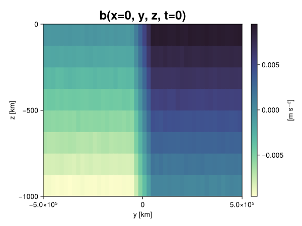
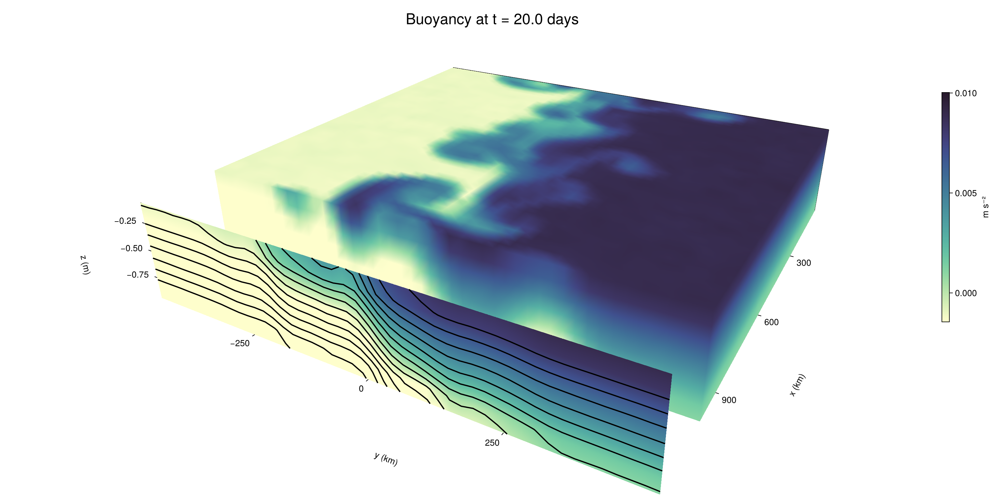

Baroclinic adjustment
In this example, we simulate the evolution and equilibration of a baroclinically unstable front.
Install dependencies
First let's make sure we have all required packages installed.
using Pkg
pkg"add Oceananigans, CairoMakie"using Oceananigans
using Oceananigans.UnitsGrid
We use a three-dimensional channel that is periodic in the x direction:
Lx = 1000kilometers # east-west extent [m]
Ly = 1000kilometers # north-south extent [m]
Lz = 1kilometers # depth [m]
grid = RectilinearGrid(size = (48, 48, 8),
x = (0, Lx),
y = (-Ly/2, Ly/2),
z = (-Lz, 0),
topology = (Periodic, Bounded, Bounded))48×48×8 RectilinearGrid{Float64, Periodic, Bounded, Bounded} on CPU with 3×3×3 halo
├── Periodic x ∈ [0.0, 1.0e6) regularly spaced with Δx=20833.3
├── Bounded y ∈ [-500000.0, 500000.0] regularly spaced with Δy=20833.3
└── Bounded z ∈ [-1000.0, 0.0] regularly spaced with Δz=125.0Model
We built a HydrostaticFreeSurfaceModel with an ImplicitFreeSurface solver. Regarding Coriolis, we use a beta-plane centered at 45° South.
model = HydrostaticFreeSurfaceModel(; grid,
coriolis = BetaPlane(latitude = -45),
buoyancy = BuoyancyTracer(),
tracers = :b,
momentum_advection = WENO(),
tracer_advection = WENO())HydrostaticFreeSurfaceModel{CPU, RectilinearGrid}(time = 0 seconds, iteration = 0)
├── grid: 48×48×8 RectilinearGrid{Float64, Periodic, Bounded, Bounded} on CPU with 3×3×3 halo
├── timestepper: QuasiAdamsBashforth2TimeStepper
├── tracers: b
├── closure: Nothing
├── buoyancy: BuoyancyTracer with ĝ = NegativeZDirection()
├── free surface: ImplicitFreeSurface with gravitational acceleration 9.80665 m s⁻²
│ └── solver: FFTImplicitFreeSurfaceSolver
├── advection scheme:
│ ├── momentum: WENO reconstruction order 5
│ └── b: WENO reconstruction order 5
└── coriolis: BetaPlane{Float64}We start our simulation from rest with a baroclinically unstable buoyancy distribution. We use ramp(y, Δy), defined below, to specify a front with width Δy and horizontal buoyancy gradient M². We impose the front on top of a vertical buoyancy gradient N² and a bit of noise.
"""
ramp(y, Δy)
Linear ramp from 0 to 1 between -Δy/2 and +Δy/2.
For example:
```
y < -Δy/2 => ramp = 0
-Δy/2 < y < -Δy/2 => ramp = y / Δy
y > Δy/2 => ramp = 1
```
"""
ramp(y, Δy) = min(max(0, y/Δy + 1/2), 1)
N² = 1e-5 # [s⁻²] buoyancy frequency / stratification
M² = 1e-7 # [s⁻²] horizontal buoyancy gradient
Δy = 100kilometers # width of the region of the front
Δb = Δy * M² # buoyancy jump associated with the front
ϵb = 1e-2 * Δb # noise amplitude
bᵢ(x, y, z) = N² * z + Δb * ramp(y, Δy) + ϵb * randn()
set!(model, b=bᵢ)Let's visualize the initial buoyancy distribution.
using CairoMakie
# Build coordinates with units of kilometers
x, y, z = 1e-3 .* nodes(grid, (Center(), Center(), Center()))
b = model.tracers.b
fig, ax, hm = heatmap(view(b, 1, :, :),
colormap = :deep,
axis = (xlabel = "y [km]",
ylabel = "z [km]",
title = "b(x=0, y, z, t=0)",
titlesize = 24))
Colorbar(fig[1, 2], hm, label = "[m s⁻²]")
fig
Simulation
Now let's build a Simulation.
simulation = Simulation(model, Δt=20minutes, stop_time=20days)Simulation of HydrostaticFreeSurfaceModel{CPU, RectilinearGrid}(time = 0 seconds, iteration = 0)
├── Next time step: 20 minutes
├── Elapsed wall time: 0 seconds
├── Wall time per iteration: NaN days
├── Stop time: 20 days
├── Stop iteration : Inf
├── Wall time limit: Inf
├── Callbacks: OrderedDict with 4 entries:
│ ├── stop_time_exceeded => Callback of stop_time_exceeded on IterationInterval(1)
│ ├── stop_iteration_exceeded => Callback of stop_iteration_exceeded on IterationInterval(1)
│ ├── wall_time_limit_exceeded => Callback of wall_time_limit_exceeded on IterationInterval(1)
│ └── nan_checker => Callback of NaNChecker for u on IterationInterval(100)
├── Output writers: OrderedDict with no entries
└── Diagnostics: OrderedDict with no entriesWe add a TimeStepWizard callback to adapt the simulation's time-step,
conjure_time_step_wizard!(simulation, IterationInterval(20), cfl=0.2, max_Δt=20minutes)Also, we add a callback to print a message about how the simulation is going,
using Printf
wall_clock = Ref(time_ns())
function print_progress(sim)
u, v, w = model.velocities
progress = 100 * (time(sim) / sim.stop_time)
elapsed = (time_ns() - wall_clock[]) / 1e9
@printf("[%05.2f%%] i: %d, t: %s, wall time: %s, max(u): (%6.3e, %6.3e, %6.3e) m/s, next Δt: %s\n",
progress, iteration(sim), prettytime(sim), prettytime(elapsed),
maximum(abs, u), maximum(abs, v), maximum(abs, w), prettytime(sim.Δt))
wall_clock[] = time_ns()
return nothing
end
add_callback!(simulation, print_progress, IterationInterval(100))Diagnostics/Output
Here, we save the buoyancy, $b$, at the edges of our domain as well as the zonal ($x$) average of buoyancy.
u, v, w = model.velocities
ζ = ∂x(v) - ∂y(u)
B = Average(b, dims=1)
U = Average(u, dims=1)
V = Average(v, dims=1)
filename = "baroclinic_adjustment"
save_fields_interval = 0.5day
slicers = (east = (grid.Nx, :, :),
north = (:, grid.Ny, :),
bottom = (:, :, 1),
top = (:, :, grid.Nz))
for side in keys(slicers)
indices = slicers[side]
simulation.output_writers[side] = JLD2OutputWriter(model, (; b, ζ);
filename = filename * "_$(side)_slice",
schedule = TimeInterval(save_fields_interval),
overwrite_existing = true,
indices)
end
simulation.output_writers[:zonal] = JLD2OutputWriter(model, (; b=B, u=U, v=V);
filename = filename * "_zonal_average",
schedule = TimeInterval(save_fields_interval),
overwrite_existing = true)JLD2OutputWriter scheduled on TimeInterval(12 hours):
├── filepath: ./baroclinic_adjustment_zonal_average.jld2
├── 3 outputs: (b, u, v)
├── array type: Array{Float64}
├── including: [:grid, :coriolis, :buoyancy, :closure]
├── file_splitting: NoFileSplitting
└── file size: 30.7 KiBNow we're ready to run.
@info "Running the simulation..."
run!(simulation)
@info "Simulation completed in " * prettytime(simulation.run_wall_time)[ Info: Running the simulation...
[ Info: Initializing simulation...
[00.00%] i: 0, t: 0 seconds, wall time: 26.814 seconds, max(u): (0.000e+00, 0.000e+00, 0.000e+00) m/s, next Δt: 20 minutes
[ Info: ... simulation initialization complete (27.966 seconds)
[ Info: Executing initial time step...
[ Info: ... initial time step complete (19.772 seconds).
[06.94%] i: 100, t: 1.389 days, wall time: 37.739 seconds, max(u): (1.276e-01, 1.160e-01, 1.493e-03) m/s, next Δt: 20 minutes
[13.89%] i: 200, t: 2.778 days, wall time: 1.092 seconds, max(u): (2.169e-01, 1.738e-01, 1.715e-03) m/s, next Δt: 20 minutes
[20.83%] i: 300, t: 4.167 days, wall time: 1.104 seconds, max(u): (2.831e-01, 2.400e-01, 1.663e-03) m/s, next Δt: 20 minutes
[27.78%] i: 400, t: 5.556 days, wall time: 1.080 seconds, max(u): (3.620e-01, 2.869e-01, 1.670e-03) m/s, next Δt: 20 minutes
[34.72%] i: 500, t: 6.944 days, wall time: 977.382 ms, max(u): (4.099e-01, 3.401e-01, 1.640e-03) m/s, next Δt: 20 minutes
[41.67%] i: 600, t: 8.333 days, wall time: 1.064 seconds, max(u): (4.729e-01, 4.285e-01, 1.751e-03) m/s, next Δt: 20 minutes
[48.61%] i: 700, t: 9.722 days, wall time: 1.055 seconds, max(u): (6.145e-01, 7.167e-01, 2.242e-03) m/s, next Δt: 20 minutes
[55.56%] i: 800, t: 11.111 days, wall time: 1.041 seconds, max(u): (7.794e-01, 1.108e+00, 2.747e-03) m/s, next Δt: 20 minutes
[62.50%] i: 900, t: 12.500 days, wall time: 1.052 seconds, max(u): (1.082e+00, 1.289e+00, 4.067e-03) m/s, next Δt: 20 minutes
[69.44%] i: 1000, t: 13.889 days, wall time: 1.091 seconds, max(u): (1.365e+00, 1.291e+00, 4.278e-03) m/s, next Δt: 20 minutes
[76.39%] i: 1100, t: 15.278 days, wall time: 1.142 seconds, max(u): (1.616e+00, 1.440e+00, 5.470e-03) m/s, next Δt: 20 minutes
[83.33%] i: 1200, t: 16.667 days, wall time: 1.124 seconds, max(u): (1.519e+00, 1.404e+00, 3.872e-03) m/s, next Δt: 20 minutes
[90.28%] i: 1300, t: 18.056 days, wall time: 1.068 seconds, max(u): (1.671e+00, 1.364e+00, 4.321e-03) m/s, next Δt: 20 minutes
[97.22%] i: 1400, t: 19.444 days, wall time: 1.027 seconds, max(u): (1.650e+00, 1.334e+00, 2.588e-03) m/s, next Δt: 20 minutes
[ Info: Simulation is stopping after running for 1.111 minutes.
[ Info: Simulation time 20 days equals or exceeds stop time 20 days.
[ Info: Simulation completed in 1.111 minutes
Visualization
All that's left is to make a pretty movie. Actually, we make two visualizations here. First, we illustrate how to make a 3D visualization with Makie's Axis3 and Makie.surface. Then we make a movie in 2D. We use CairoMakie in this example, but note that using GLMakie is more convenient on a system with OpenGL, as figures will be displayed on the screen.
using CairoMakieThree-dimensional visualization
We load the saved buoyancy output on the top, north, and east surface as FieldTimeSerieses.
filename = "baroclinic_adjustment"
sides = keys(slicers)
slice_filenames = NamedTuple(side => filename * "_$(side)_slice.jld2" for side in sides)
b_timeserieses = (east = FieldTimeSeries(slice_filenames.east, "b"),
north = FieldTimeSeries(slice_filenames.north, "b"),
top = FieldTimeSeries(slice_filenames.top, "b"))
B_timeseries = FieldTimeSeries(filename * "_zonal_average.jld2", "b")
times = B_timeseries.times
grid = B_timeseries.grid48×48×8 RectilinearGrid{Float64, Periodic, Bounded, Bounded} on CPU with 3×3×3 halo
├── Periodic x ∈ [0.0, 1.0e6) regularly spaced with Δx=20833.3
├── Bounded y ∈ [-500000.0, 500000.0] regularly spaced with Δy=20833.3
└── Bounded z ∈ [-1000.0, 0.0] regularly spaced with Δz=125.0We build the coordinates. We rescale horizontal coordinates to kilometers.
xb, yb, zb = nodes(b_timeserieses.east)
xb = xb ./ 1e3 # convert m -> km
yb = yb ./ 1e3 # convert m -> km
Nx, Ny, Nz = size(grid)
x_xz = repeat(x, 1, Nz)
y_xz_north = y[end] * ones(Nx, Nz)
z_xz = repeat(reshape(z, 1, Nz), Nx, 1)
x_yz_east = x[end] * ones(Ny, Nz)
y_yz = repeat(y, 1, Nz)
z_yz = repeat(reshape(z, 1, Nz), grid.Ny, 1)
x_xy = x
y_xy = y
z_xy_top = z[end] * ones(grid.Nx, grid.Ny)Then we create a 3D axis. We use zonal_slice_displacement to control where the plot of the instantaneous zonal average flow is located.
fig = Figure(size = (1600, 800))
zonal_slice_displacement = 1.2
ax = Axis3(fig[2, 1],
aspect=(1, 1, 1/5),
xlabel = "x (km)",
ylabel = "y (km)",
zlabel = "z (m)",
xlabeloffset = 100,
ylabeloffset = 100,
zlabeloffset = 100,
limits = ((x[1], zonal_slice_displacement * x[end]), (y[1], y[end]), (z[1], z[end])),
elevation = 0.45,
azimuth = 6.8,
xspinesvisible = false,
zgridvisible = false,
protrusions = 40,
perspectiveness = 0.7)Axis3()We use data from the final savepoint for the 3D plot. Note that this plot can easily be animated by using Makie's Observable. To dive into Observables, check out Makie.jl's Documentation.
n = length(times)41Now let's make a 3D plot of the buoyancy and in front of it we'll use the zonally-averaged output to plot the instantaneous zonal-average of the buoyancy.
b_slices = (east = interior(b_timeserieses.east[n], 1, :, :),
north = interior(b_timeserieses.north[n], :, 1, :),
top = interior(b_timeserieses.top[n], :, :, 1))
# Zonally-averaged buoyancy
B = interior(B_timeseries[n], 1, :, :)
clims = 1.1 .* extrema(b_timeserieses.top[n][:])
kwargs = (colorrange=clims, colormap=:deep, shading=NoShading)
surface!(ax, x_yz_east, y_yz, z_yz; color = b_slices.east, kwargs...)
surface!(ax, x_xz, y_xz_north, z_xz; color = b_slices.north, kwargs...)
surface!(ax, x_xy, y_xy, z_xy_top; color = b_slices.top, kwargs...)
sf = surface!(ax, zonal_slice_displacement .* x_yz_east, y_yz, z_yz; color = B, kwargs...)
contour!(ax, y, z, B; transformation = (:yz, zonal_slice_displacement * x[end]),
levels = 15, linewidth = 2, color = :black)
Colorbar(fig[2, 2], sf, label = "m s⁻²", height = Relative(0.4), tellheight=false)
title = "Buoyancy at t = " * string(round(times[n] / day, digits=1)) * " days"
fig[1, 1:2] = Label(fig, title; fontsize = 24, tellwidth = false, padding = (0, 0, -120, 0))
rowgap!(fig.layout, 1, Relative(-0.2))
colgap!(fig.layout, 1, Relative(-0.1))
save("baroclinic_adjustment_3d.png", fig)
Two-dimensional movie
We make a 2D movie that shows buoyancy $b$ and vertical vorticity $ζ$ at the surface, as well as the zonally-averaged zonal and meridional velocities $U$ and $V$ in the $(y, z)$ plane. First we load the FieldTimeSeries and extract the additional coordinates we'll need for plotting
ζ_timeseries = FieldTimeSeries(slice_filenames.top, "ζ")
U_timeseries = FieldTimeSeries(filename * "_zonal_average.jld2", "u")
B_timeseries = FieldTimeSeries(filename * "_zonal_average.jld2", "b")
V_timeseries = FieldTimeSeries(filename * "_zonal_average.jld2", "v")
xζ, yζ, zζ = nodes(ζ_timeseries)
yv = ynodes(V_timeseries)
xζ = xζ ./ 1e3 # convert m -> km
yζ = yζ ./ 1e3 # convert m -> km
yv = yv ./ 1e3 # convert m -> km49-element Vector{Float64}:
-500.0
-479.1666666666667
-458.3333333333333
-437.5
-416.6666666666667
-395.8333333333333
-375.0
-354.1666666666667
-333.3333333333333
-312.5
-291.6666666666667
-270.8333333333333
-250.0
-229.16666666666666
-208.33333333333334
-187.5
-166.66666666666666
-145.83333333333334
-125.0
-104.16666666666667
-83.33333333333333
-62.5
-41.666666666666664
-20.833333333333332
0.0
20.833333333333332
41.666666666666664
62.5
83.33333333333333
104.16666666666667
125.0
145.83333333333334
166.66666666666666
187.5
208.33333333333334
229.16666666666666
250.0
270.8333333333333
291.6666666666667
312.5
333.3333333333333
354.1666666666667
375.0
395.8333333333333
416.6666666666667
437.5
458.3333333333333
479.1666666666667
500.0Next, we set up a plot with 4 panels. The top panels are large and square, while the bottom panels get a reduced aspect ratio through rowsize!.
set_theme!(Theme(fontsize=24))
fig = Figure(size=(1800, 1000))
axb = Axis(fig[1, 2], xlabel="x (km)", ylabel="y (km)", aspect=1)
axζ = Axis(fig[1, 3], xlabel="x (km)", ylabel="y (km)", aspect=1, yaxisposition=:right)
axu = Axis(fig[2, 2], xlabel="y (km)", ylabel="z (m)")
axv = Axis(fig[2, 3], xlabel="y (km)", ylabel="z (m)", yaxisposition=:right)
rowsize!(fig.layout, 2, Relative(0.3))To prepare a plot for animation, we index the timeseries with an Observable,
n = Observable(1)
b_top = @lift interior(b_timeserieses.top[$n], :, :, 1)
ζ_top = @lift interior(ζ_timeseries[$n], :, :, 1)
U = @lift interior(U_timeseries[$n], 1, :, :)
V = @lift interior(V_timeseries[$n], 1, :, :)
B = @lift interior(B_timeseries[$n], 1, :, :)Observable([-0.009381161660474356 -0.008126074277095429 -0.006882110188548629 -0.005638871661310937 -0.0043812839826979175 -0.0031248137074326963 -0.0018632492166924441 -0.000610162441062651; -0.009354471202024912 -0.008106516394838807 -0.006856573088455634 -0.00564995486931462 -0.004371636793039915 -0.00313552018664055 -0.001841880700181522 -0.0006172036901708079; -0.009347353098944078 -0.008136200855596404 -0.006898026507928652 -0.005628561870154837 -0.004361784474296101 -0.0031092100795192218 -0.0018891548589645944 -0.0006317793638278187; -0.009390998581244045 -0.00814235464852523 -0.006891365476303713 -0.005612537047474129 -0.004378230162758978 -0.0031290476605173694 -0.0018660315419797944 -0.0006373432114999599; -0.009390011115817916 -0.008113784431381563 -0.006870803902888893 -0.005596280251766246 -0.004385844648428544 -0.0031122124407815806 -0.0018889120963762106 -0.0006107561511825094; -0.009369429680447081 -0.00812010898426818 -0.006867588241538426 -0.005614447788705829 -0.004379442034046808 -0.0031552292550404196 -0.00190038963160619 -0.0006110596896655232; -0.00936440040362758 -0.008130037451826526 -0.006873414341421143 -0.005606643091949008 -0.004370314373597673 -0.0031417534289458274 -0.0018698244800965638 -0.0006315173952831649; -0.009369674042713308 -0.008125477753292849 -0.006876078896988662 -0.005603314366422252 -0.004350970725420208 -0.0031101457957324313 -0.001892520868612702 -0.0006078857070639775; -0.009366982384552377 -0.008140367313756546 -0.006867137191379068 -0.005637952602409175 -0.004369572213207257 -0.003136964451162457 -0.0018852030618592116 -0.0006307091800232184; -0.009355263942843556 -0.008137378597460826 -0.006876001610473981 -0.005631549126643932 -0.004373902037254918 -0.0031319603841733225 -0.001897158719838891 -0.0006339936089848856; -0.00938961277861898 -0.008135971844884763 -0.006841979284913909 -0.005645131688185821 -0.004348359219908612 -0.003135955527588663 -0.0018550436784850316 -0.0006357909436539147; -0.009357365897664442 -0.008107225453070082 -0.00685495799052955 -0.005607757148269992 -0.004355898531551425 -0.003112976206067569 -0.0018600471067602854 -0.0006555905952919117; -0.009357012899120618 -0.008127579517043843 -0.0068905011728466956 -0.005621863358081122 -0.004378044012504893 -0.003120315152646926 -0.0018962655899705356 -0.0006266103872696119; -0.009378501779705962 -0.00813111739497095 -0.00688012830581265 -0.005623373021199633 -0.0043969761915554914 -0.0031303860378909206 -0.001851639632322594 -0.0006156933386560269; -0.009384120539378552 -0.008154433468120779 -0.006872052941611061 -0.00562174605253444 -0.004367484209012851 -0.0031166165507891547 -0.0019122189636922632 -0.0006378448846038029; -0.009347445164451644 -0.00813322587903789 -0.00686355881886868 -0.005607359808045575 -0.004365422465898054 -0.0031421685888267455 -0.0018682972520219123 -0.0006393819680169362; -0.009358781923178112 -0.008126146435606019 -0.006850904318463968 -0.005622456980917251 -0.004360403549505492 -0.0031280064484414762 -0.0018871981096083093 -0.0006321898364468845; -0.009346492362149387 -0.008124334754271172 -0.006865359478562878 -0.005618498722111886 -0.004391121974661838 -0.00312934859367237 -0.0019001260163932817 -0.000614347044174733; -0.009403311017010333 -0.008152436298688061 -0.006860825506314766 -0.005617195405230153 -0.004377983339348249 -0.0031144870180224242 -0.0018787552519566233 -0.0006232918748076682; -0.009384076975052216 -0.008119632886122137 -0.006897203133628957 -0.005633321077339134 -0.004382349128986934 -0.0031064769335307704 -0.0018676964944872117 -0.0006330030389225697; -0.009347014990792853 -0.00813050834562418 -0.006868195789816155 -0.005627312411469147 -0.004344548233761406 -0.0031341183374513893 -0.001894450054773362 -0.0006107170794433677; -0.009359246898180294 -0.00811466397018471 -0.0068740846100437784 -0.005642004299629207 -0.004346097644287541 -0.0031401872435493083 -0.0019025032409343606 -0.000614965859621036; -0.007492590302710186 -0.006257131420524856 -0.005014909550677012 -0.0037455181444600878 -0.0025078529130271175 -0.0012417511240530971 1.2259428201969932e-5 0.0012612355346207976; -0.005408333627237735 -0.004168878185985567 -0.0029175405268338475 -0.0016496754152911317 -0.00040685913491004074 0.0008536023945793029 0.0020708655357077137 0.0033653587241336074; -0.003303842642245884 -0.0020881245077914814 -0.0008352890069145873 0.00042195490674665025 0.0016556268758720993 0.00294471925519019 0.004138805654866734 0.0054245601903874854; -0.0012690176641315702 1.4741600617939073e-6 0.0012504887099343731 0.002490120913199943 0.003754108354152763 0.005015248162164128 0.0062667788375545186 0.0074770686919422465; 0.0006236077142561755 0.001885729227660847 0.003123868569967429 0.00438476785238302 0.005617205094689021 0.006867072435427092 0.008127778924332207 0.009374819481764274; 0.0006265563785147341 0.0018570790020850303 0.003119277960828853 0.004381466427588747 0.005599432294046404 0.00687654525993298 0.008117249951288026 0.009374416357640344; 0.000633092879957181 0.0018602481238438916 0.0031441593054621192 0.0043812588737692565 0.005623049449230641 0.0068686538835464155 0.008147992956213606 0.009365858934753378; 0.000617758237126311 0.0018617497777446868 0.0031274762436275193 0.004385366519072186 0.005603058959240591 0.00687604864513719 0.008106380760407568 0.009376402285251927; 0.0006610968499633679 0.0018891844392845477 0.0031233445115659776 0.004385235305179906 0.005623023646526795 0.0068676022038368645 0.008132100716068855 0.00936789618606861; 0.000617498120611491 0.0018842204485844335 0.0031273287322138702 0.0043558968136288 0.005613875157160601 0.006870465075828257 0.008108704287469773 0.009399862307291637; 0.0006404555895044266 0.0018899150794772352 0.0031306779361935416 0.004379163367690758 0.00561568322115788 0.006876654146375662 0.008124722727569459 0.00939030908547237; 0.0006293135877348368 0.001897639561218488 0.003118276082164017 0.004383156089393374 0.005602971714440414 0.006869786589357797 0.008119260657083937 0.009366600036933742; 0.0006046547165934808 0.0018370425567671865 0.0031299973441776194 0.004385048732146305 0.00565349020689378 0.006865419839682671 0.008140523570766745 0.009366534811621014; 0.0006122857570375065 0.0018824563439375603 0.0031098040082537318 0.004390996826359147 0.005612510022410227 0.006871453371410148 0.008149524861689987 0.009393441681984823; 0.0006275779342326221 0.001885821432218809 0.003099827709428462 0.004375600190484799 0.005632378736461934 0.0068681435681101285 0.008150691568622066 0.00938098045112991; 0.0006149741720931317 0.0018984868138435364 0.0031319491999679573 0.004404267235174841 0.005655966670937915 0.0068457426913986095 0.00812941219717225 0.009384700509997417; 0.0006400543081731298 0.0018909307661463392 0.0030902324248316634 0.004373113124960707 0.005612256534220962 0.00687712989712578 0.008106615293626355 0.009384280229082448; 0.0006288846718333254 0.00186640349285488 0.003137816922596445 0.004376378885227628 0.005639851862270441 0.006893514454639285 0.00813685597365619 0.009378336832453335; 0.0006165360847369595 0.0018866082425532497 0.003137988344215832 0.004351725961610846 0.005610623619741222 0.006890356223339567 0.008124591645428924 0.00939325801539947; 0.0006570619189000584 0.001870265401893112 0.0031293577794587455 0.004383310281350555 0.005628514817886507 0.006884250265185267 0.008126568587563589 0.009392745823288287; 0.0006248355815903721 0.001862961522171233 0.0031334713551758875 0.004361344734101099 0.005631106293730819 0.006862275339649659 0.008121718397718867 0.009390570629901394; 0.0006110668808363455 0.0018682675097109816 0.0031355223498763774 0.004350421178565847 0.0056511578220546956 0.006858433007431257 0.00815348534345234 0.009375518076431366; 0.0006081289012514231 0.001900715980756898 0.0031008422030860266 0.004358360350532519 0.005607393455722844 0.006858354908542326 0.008122304252796565 0.009368620002449464; 0.0006238885261926763 0.0018840414075409564 0.00314594322403827 0.004380931123899339 0.00560678314341322 0.006857204688410362 0.008134913760600515 0.009380035052502296; 0.0005837218418943577 0.0018758095592201719 0.0031055816757021245 0.004363862375293955 0.005636021795041202 0.006860418656913625 0.008115871857745168 0.009389879224048383; 0.0006360656827301658 0.0018861748960660237 0.003131763045254136 0.0043698890483561455 0.005622470102663796 0.0068696412654295665 0.008154154202368771 0.009367173872214715])
and then build our plot:
hm = heatmap!(axb, xb, yb, b_top, colorrange=(0, Δb), colormap=:thermal)
Colorbar(fig[1, 1], hm, flipaxis=false, label="Surface b(x, y) (m s⁻²)")
hm = heatmap!(axζ, xζ, yζ, ζ_top, colorrange=(-5e-5, 5e-5), colormap=:balance)
Colorbar(fig[1, 4], hm, label="Surface ζ(x, y) (s⁻¹)")
hm = heatmap!(axu, yb, zb, U; colorrange=(-5e-1, 5e-1), colormap=:balance)
Colorbar(fig[2, 1], hm, flipaxis=false, label="Zonally-averaged U(y, z) (m s⁻¹)")
contour!(axu, yb, zb, B; levels=15, color=:black)
hm = heatmap!(axv, yv, zb, V; colorrange=(-1e-1, 1e-1), colormap=:balance)
Colorbar(fig[2, 4], hm, label="Zonally-averaged V(y, z) (m s⁻¹)")
contour!(axv, yb, zb, B; levels=15, color=:black)Finally, we're ready to record the movie.
frames = 1:length(times)
record(fig, filename * ".mp4", frames, framerate=8) do i
n[] = i
endThis page was generated using Literate.jl.